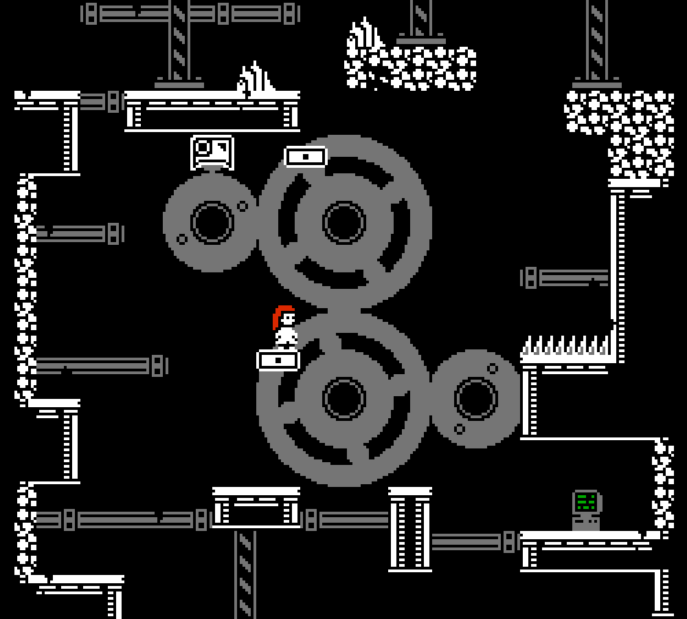
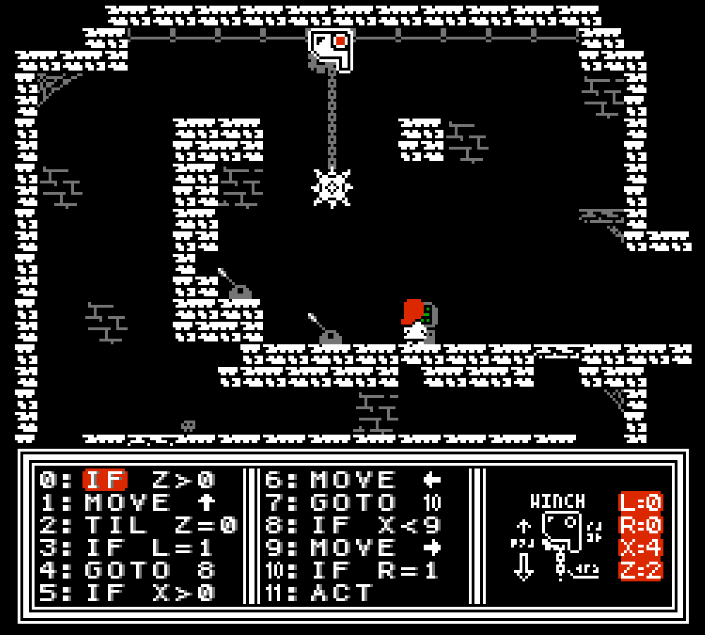

Buried just beneath Anna's medieval home village lie the crumbled ruins of a long-dead civilization that once advanced by leaps and bounds, until its knowledge outpaced its understanding. Now all memory of them is lost, and their forgotten machinery lies dormant underground, waiting for someone to revive and repurpose it. Find yourself needing an elevator while exploring the caves? A crane? A weapon? You'll have to write the code that makes them go.
Bit by bit, you can reawaken all that ancient knowledge and power, and rediscover the history of how it once fell apart. And who knows?
Maybe this time will be different.

Featuring a sprawling world, mysterious lore, open-ended puzzles, and heart-pounding boss fights, Annalog is the assembly programming Metroidvania you never asked for.
After a successful Kickstarter campaign, public pre-orders for physical Annalog carts are now open!